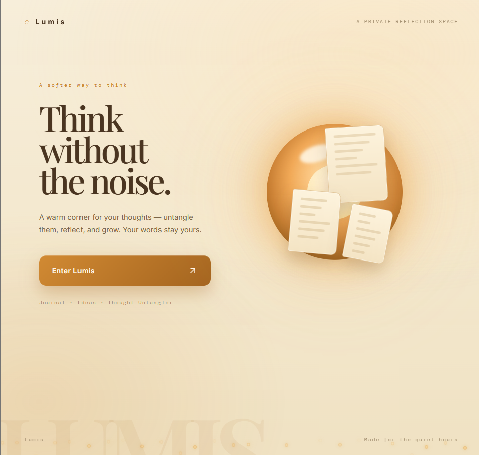
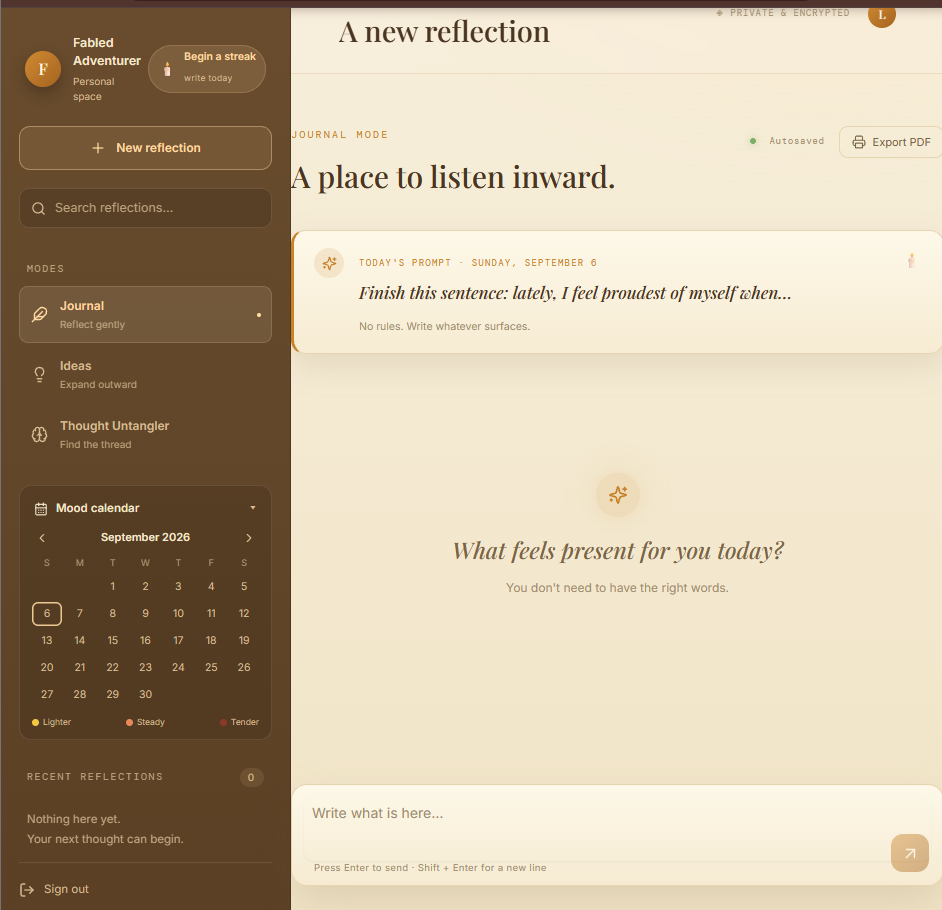

Cabinet Nº 001 — est. 2026
Pilla
Sri Sai Rahul
explorer · builder · mechatronics undergrad — I make things happen.
Flagship · drawer 001
Lumis
Think without the noise. A warm corner for your thoughts — untangle them, reflect, and grow. Your words stay yours.


- Problem
- Your reading life leaves no trace — books close, thoughts evaporate.
- Idea
- A journal that records the act of reading: timestamps, mood, and the uneasy parts a bookshelf hides.
- System
- React · Node · Firebase · Gemini API — journal, ideas and untangler modes, daily prompts, mood calendar, PDF export.
- Status
- Open prototype — not production. Live, working, and growing.
The shelves · drawers 002–005
Everything else
on the bench.
Four drawers, no filler. Each one is real practice — ask me what's inside and I'll show you the build.
-
Machines that move
Arduino & ESP32 builds — GPIO, PWM, sensors, actuators. Currently on the bench as an IoT & Robotics trainee.
-
Things that talk
Telemetry and dashboards — devices reporting home over MQTT, readings becoming decisions.
-
Minds in the loop
GenAI prototypes with the Gemini API — ideas carried from pitch to playable demo under hackathon clocks.
-
Experiments
Weekend contraptions and simulations — Tinkercad, Wokwi, whatever the question needs. This drawer never closes.
Field log · stamped entries
Carried to
a result.
-
01
shipped to stage
Hack2Skill · Gen-AI APAC Ideathon
Team Lead · Builder — an AI concept carried from pitch to playable demo.
-
02
48h build, shipped
AssemblyAI × LabLab · AI Hackathon
Builder — shipped end to end within 48 hours against a hard clock.
-
03
standing post
IoT & Robotics Trainee — Unlox Academy
2026 → present — embedded circuits on a bench; every exercise becomes a build.
-
04
standing post
Team Leader — E-Cell, Mahindra University
Run the room, ship the event, keep the teams in rhythm.
B.Tech Mechatronics · Mahindra University, Hyderabad · 2026 → 2030
Transmission · the room has a door
Send a
signal.
fabledadventurer.pssr@gmail.com
Built by hand — HTML · CSS · JS. Fraunces & IBM Plex Mono. No templates. P.S. — press ` anywhere.